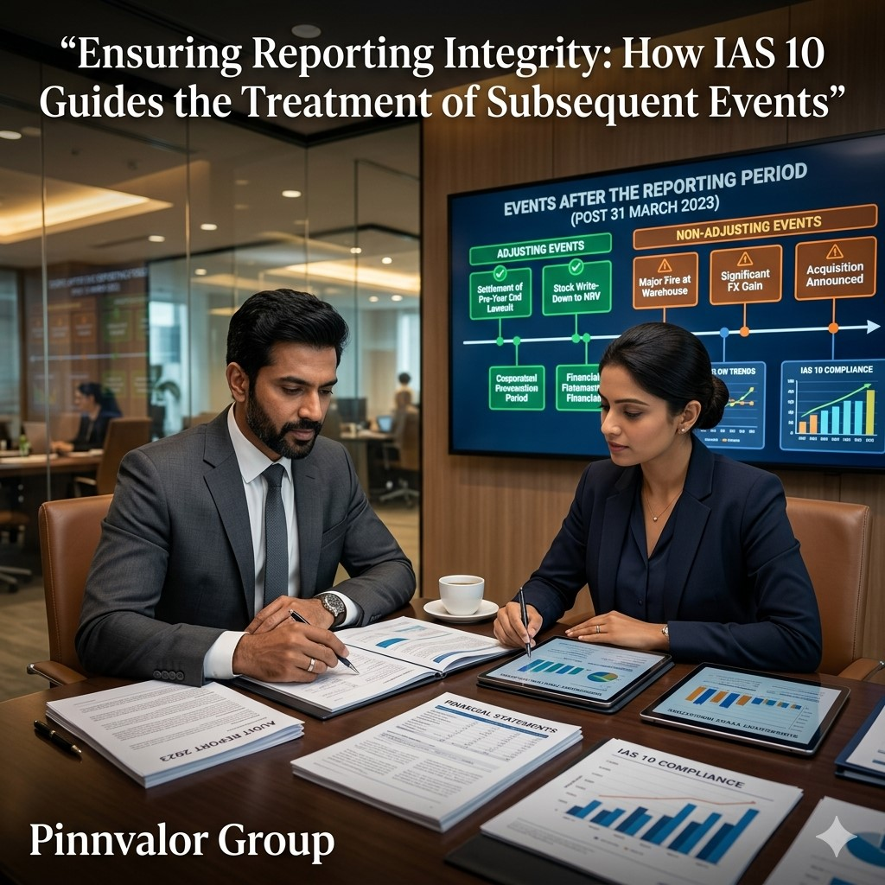

Ensuring Reporting Integrity: How IAS 10 Guides the Treatment of Subsequent Events
Financial statements are often viewed as a snapshot of an organization's financial position at a specific date. However, significant events can occur between the reporting date and the date when financial statements are authorized for issue. These events may provide additional evidence about conditions existing at the reporting date or reveal new circumstances that could influence stakeholders' decisions.
Are your financial reports capturing the full story beyond the reporting date?
Reliable financial statements are built not only on historical facts but also on timely evaluation of subsequent events. IAS 10 bridges the gap between reporting dates and informed decision-making.
To address this challenge, IAS 10 – Events after the Reporting Period establishes principles for identifying, evaluating, and disclosing events that occur after the reporting period. By ensuring that relevant information is appropriately reflected in financial statements, IAS 10 enhances transparency, reliability, and stakeholder confidence.
Understanding IAS 10
IAS 10 prescribes how entities should account for and disclose events that occur between:
- The end of the reporting period; and
- The date when the financial statements are authorized for issue.
The standard helps organizations determine:
- Whether financial statements should be adjusted for post-reporting events.
- Whether disclosures are required for significant subsequent events.
- When the going concern assumption remains appropriate.
What Are Events After the Reporting Period?
Events after the reporting period are favorable or unfavorable occurrences that take place between the reporting date and the date of authorization of financial statements.
IAS 10 categorizes these events into two distinct types:
1. Adjusting Events
Adjusting events provide additional evidence of conditions that already existed at the reporting date. Since these conditions were present before the reporting period ended, financial statements must be adjusted to reflect the new information.
Examples of Adjusting Events
- Settlement of a lawsuit confirming an existing obligation at year-end.
- Bankruptcy of a customer indicating a receivable was impaired at the reporting date.
- Discovery of fraud or accounting errors affecting reported balances.
- Receipt of information regarding inventory values existing at year-end.
- Final determination of asset impairment conditions that existed before the reporting date.
In such cases, entities revise relevant asset, liability, income, or expense amounts before issuing financial statements.
2. Non-Adjusting Events
Non-adjusting events relate to conditions that arose after the reporting period. Since these circumstances did not exist at the reporting date, no adjustment is made to financial statements.
However, material events must be disclosed if they could influence the decisions of investors, lenders, regulators, or other stakeholders.
Examples of Non-Adjusting Events
- Major business acquisitions after year-end.
- Natural disasters occurring after the reporting period.
- Significant changes in market values after year-end.
- Issuance of shares or debt instruments.
- Major restructuring announcements made after the reporting date.
- Loss of a major customer due to events occurring after year-end.

The Importance of the Authorization Date
A critical concept under IAS 10 is the date when financial statements are authorized for issue. Events occurring up to this date must be evaluated under the standard.
The authorization date varies depending on an entity's governance structure and regulatory requirements. Management must clearly identify this date because it establishes the cutoff point for assessing subsequent events.
IAS 10 and the Going Concern Assumption
One of the most important aspects of IAS 10 relates to the going concern principle.
If management becomes aware after the reporting date that the entity may no longer be able to continue operating as a going concern, financial statements may require significant revision.
Examples include:
- Severe liquidity crises.
- Loss of critical financing arrangements.
- Government actions affecting business viability.
- Catastrophic operational disruptions.
- Events leading to probable liquidation.
Even if these circumstances emerge after year-end, management must carefully assess whether the going concern basis remains appropriate.
Disclosure Requirements for Non-Adjusting Events
When non-adjusting events are material, IAS 10 requires entities to disclose:
- The nature of the event.
- An estimate of the financial effect.
- A statement that such an estimate cannot be made if quantification is impracticable.
These disclosures ensure stakeholders understand developments that could significantly affect future performance and financial position.
Practical Illustration
Consider a company with a financial year ending on 31 March 2026.
On 20 April 2026, a major customer enters bankruptcy proceedings due to financial difficulties that existed before year-end. This provides evidence that the receivable was already impaired at 31 March 2026.
Since the underlying condition existed at the reporting date, the event is classified as an adjusting event, and the company should revise its expected credit loss provision.
Alternatively, if a factory is destroyed by a flood on 25 April 2026 and no related conditions existed at year-end, the event is considered non-adjusting. The financial statements would not be adjusted, but appropriate disclosure may be required if the impact is material.
Challenges in Applying IAS 10
1. Determining Existing Conditions
Management must assess whether an event provides evidence of a condition that existed at the reporting date or represents a new circumstance.
2. Assessing Materiality
Determining whether a non-adjusting event requires disclosure involves significant judgment.
3. Gathering Timely Information
Organizations must establish procedures to identify relevant events occurring after the reporting period.
4. Cross-Functional Coordination
Finance teams often rely on legal, operational, treasury, compliance, and executive functions to identify significant developments.
5. Global Operations Complexity
Multinational organizations face additional challenges in monitoring events across multiple jurisdictions and reporting entities.
Best Practices for Compliance with IAS 10
- Implement formal post-reporting event review procedures.
- Establish clear communication channels across departments.
- Conduct subsequent event assessments before authorization of financial statements.
- Document management judgments and supporting evidence.
- Review legal, operational, financing, and regulatory developments regularly.
- Maintain robust governance over financial reporting processes.
- Engage auditors early when significant subsequent events arise.
The Strategic Value of IAS 10
IAS 10 is more than a compliance requirement—it is a safeguard for reporting integrity. By ensuring that financial statements incorporate relevant post-reporting information, the standard helps organizations present a fair and reliable view of their financial position.
Investors, lenders, regulators, and other stakeholders rely on accurate information to make informed decisions. Proper application of IAS 10 strengthens confidence in financial reporting and reduces the risk of misleading disclosures.
Conclusion
Events occurring after the reporting period can significantly influence how financial statements are interpreted. IAS 10 provides a structured framework for distinguishing between adjusting and non-adjusting events, ensuring that financial reports remain relevant, transparent, and trustworthy.
Organizations that apply IAS 10 effectively not only achieve compliance with international accounting standards but also reinforce stakeholder confidence through high-quality financial reporting. In an environment where timely and accurate information is critical, understanding and implementing IAS 10 is essential for maintaining reporting integrity and supporting sound business decision-making.